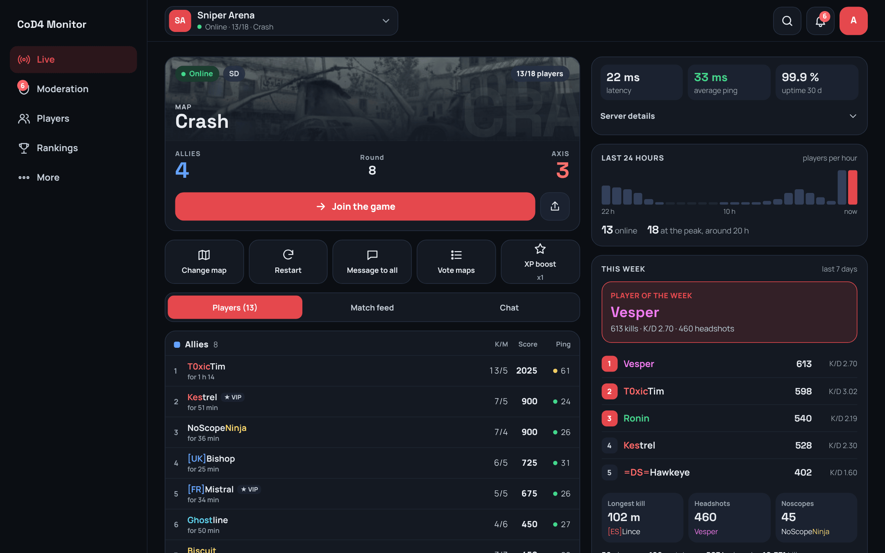
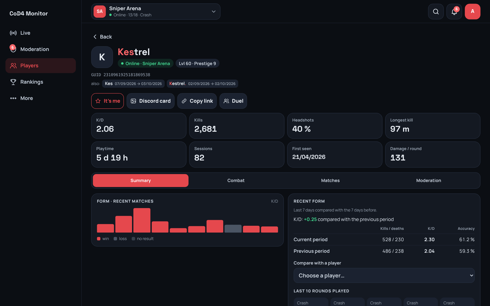
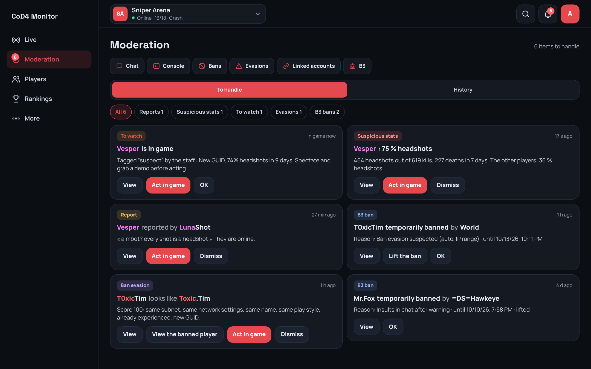
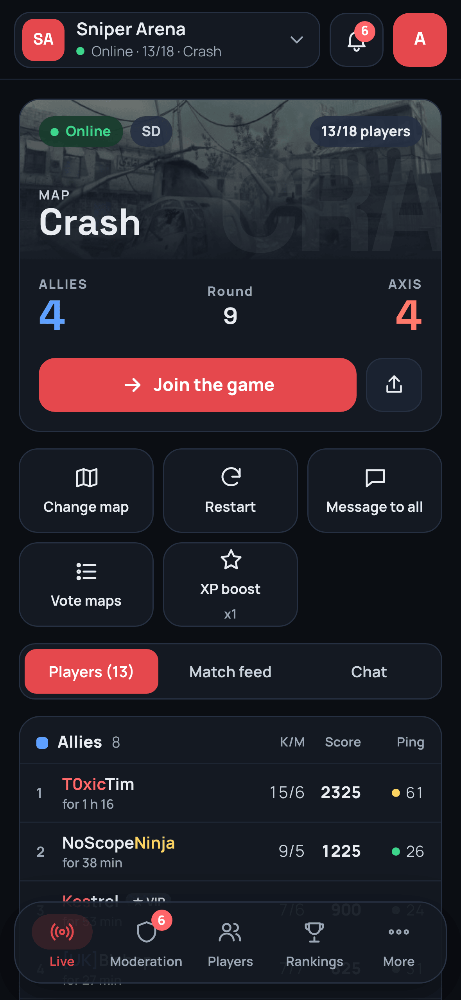
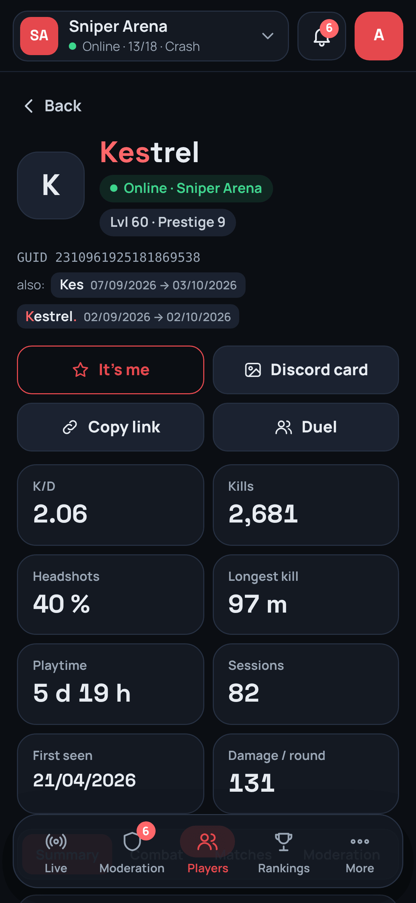
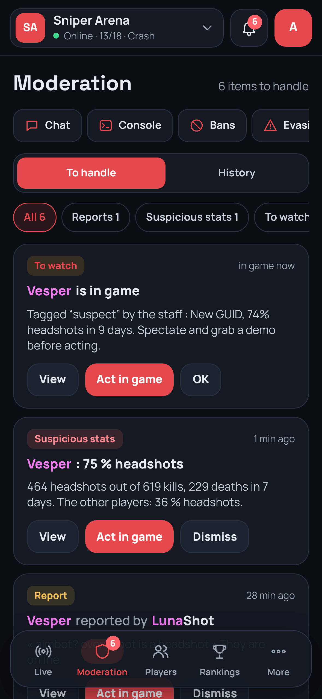

Your CoD4X server,
live in a browser.

LIVE
Every round, as it happens.
Map, score, players and ping. Change map or restart in one tap.
PLAYERS
One page per player.
K/D, headshots, longest kill, old names, every match.

MODERATION
Ban evasion, spotted.
Reports, suspects and B3 bans in one inbox.

Built for your
phone
first.



CoD4
Monitor
Free & open source · One Go binary + SQLite
github.com/FlorianMartinez01/cod4-monitor